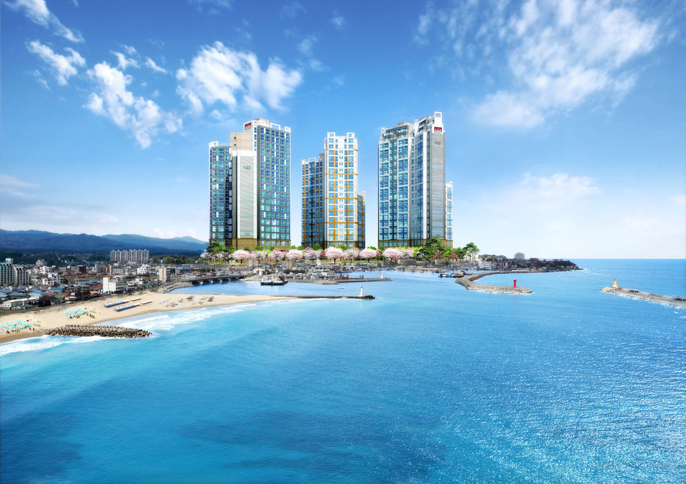

사업개요바다를 전망하는 주문진의 중심에서 주거문화의 새 바람을 일으키다!
투시도

- 상기 이미지는 소비자의 이해를 돕기 위한 것으로 실제와 차이가 있을 수 있으며, 인허가 과정에서 입면 디자인 및 마감 등이 변경될 수 있습니다.
- 상기 이미지 상의 개발 및 교통계획에 관한 사항은 추후 관계기관의 사정에 따라 변경 및 취소 될 수 있으며 이는 당사와 무관함을 알려드립니다.
사업개요
| 사업명 |
주문진 삼부르네상스 |
| 대지위치 |
경기도 남양주시 진접읍 금곡리 527-1번지 일대 |
| 용도 |
공동주택 및 근린생활 시설 |
| 지역/지구 |
지구단위계획구역 / 제2종 일반주거지역 |
| 규모 |
지하3~지상27층, 3개동, 공동주택 348세대 |
| 대지면적 |
12,191.00 ㎡ | 3,688 평 |
| 건축면적 |
1,908.26 ㎡ | 577 평 |
| 지상연면적 |
28,955.40 ㎡ | 8,759 평 |
| 지하연면적 |
14,302.00 ㎡ | 4,326 평 |
| 총 연면적 |
43,257.39 ㎡ | 13,085 평 |
| 건폐율/용적률 |
15.65% (법정 20%) | 237.51% (법정 241.75%) |
| 주차대수 |
365대 (법정 247대) |
| 준공(예정) |
2022년 12월 |